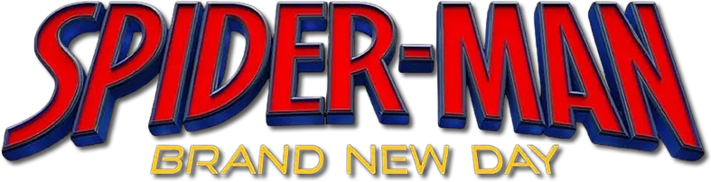
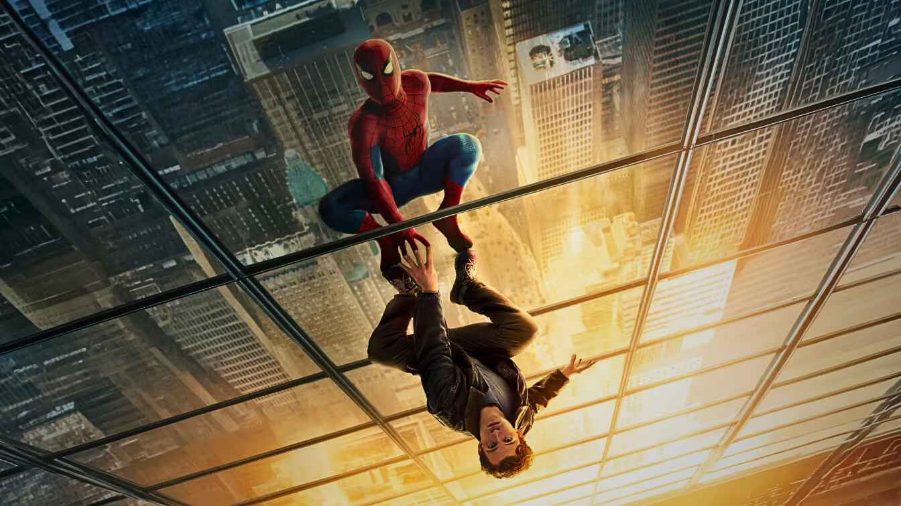
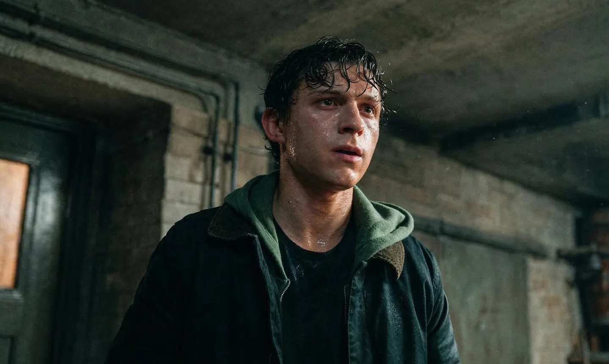

.png)


It is the culmination of a trilogy that tells the origin story of Peter Parker, the young and friendly neighborhood Spider-Man, in the Marvel Cinematic Universe (MCU).


เรื่องย่อ
หลังจากประสบความความสำเร็จในการทำลายสถิติระดับโลกอย่างถล่มทลายของ Spider-Man: No Way Home, Spider-Man: Brand New Day คือการเปิดเรื่องราวบทใหม่ของปีเตอร์ พาร์คเกอร์ และสไปเดอร์-แมน สี่ปีผ่านไปนับตั้งแต่เหตุการณ์ใน Spider-Man: No Way Home ปีเตอร์เติบโตเป็นผู้ใหญ่เต็มตัว และใช้ชีวิตเพียงลำพังโดยสมบูรณ์ หลังจากเลือกที่จะลบตัวเองออกจากชีวิตและความทรงจำของคนที่เขารักทั้งหมด ด้วยการต่อสู้กับอาชญากรรมในมหานครนิวยอร์กที่ไม่มีใครจดจำชื่อของเขาได้อีกต่อไป เขาทุ่มเททุกอย่างให้กับการปกป้องเมืองของเขา ด้วยการเป็นสไปเดอร์-แมนเต็มตัว แต่เมื่อภาระหน้าที่ทวีความหนักหน่วง แรงกดดันกลับจุดชนวนให้เกิดการเปลี่ยนแปลงทางร่างกายอย่างคาดไม่ถึง ซึ่งอาจคุกคามการดำรงอยู่ของเขา ขณะเดียวกัน รูปแบบอาชญากรรมปริศนาแบบใหม่ก็เริ่มปรากฏ นำไปสู่ภัยคุกคามที่ทรงพลังที่สุดครั้งหนึ่งเท่าที่เขาเคยเผชิญ
ตัวอย่างในภาพยนตร์

ตัวละครหลัก

Tom Holland
The street-level hero protecting New York City.
Zendaya
Returns, though she no longer remembers Peter.
Sadie Sink
Powerful mutant facing off against Peter.
Jacob Batalon
Peter's former best friend who also forgot him.

Jon Bernthal
Appears in the gritty street-level storyline.

Mark Ruffalo
Features alongside Spidey in the wider MCU connection.